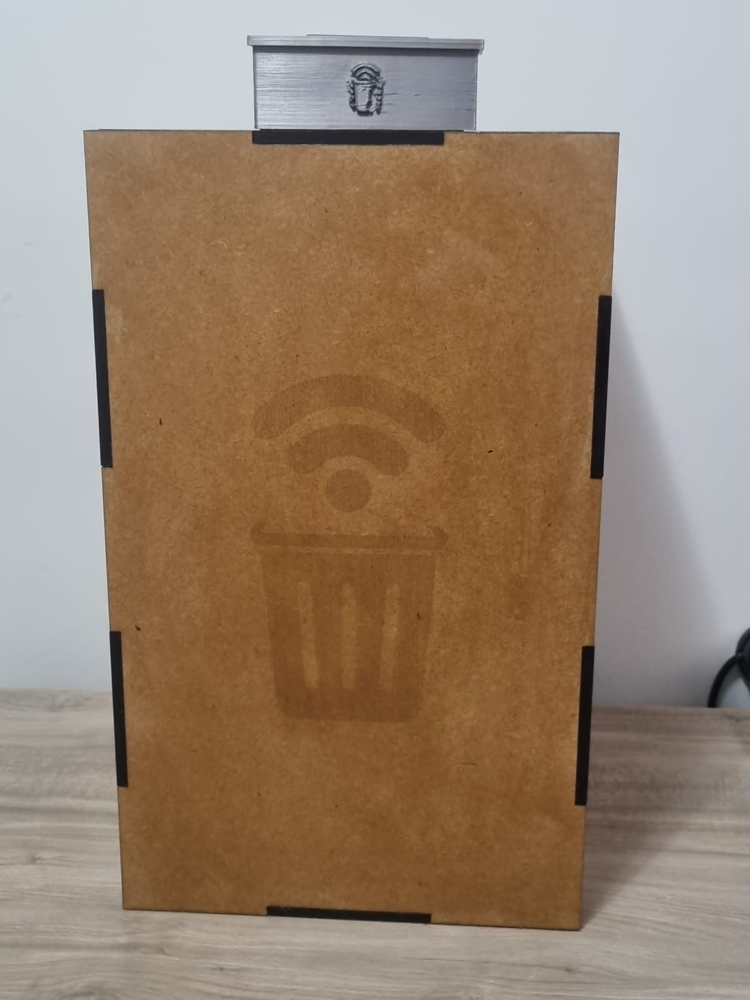
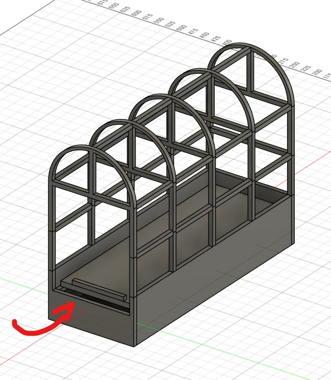

Criamos uma Lixeira Inteligente a fim de facilitar o descarte responsável no campus do Centro Universitário Facens, utilizando sensores e um display LCD para a demonstrarmos visualmente o nível de enchimento da lixeira.
Estamos criando um sistema de automação para estufas que monitora e controla as condições climáticas internas para otimizar o uso de recursos naturais.
